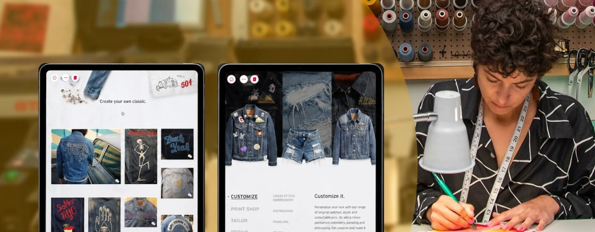
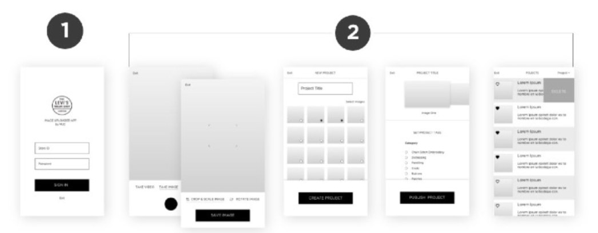
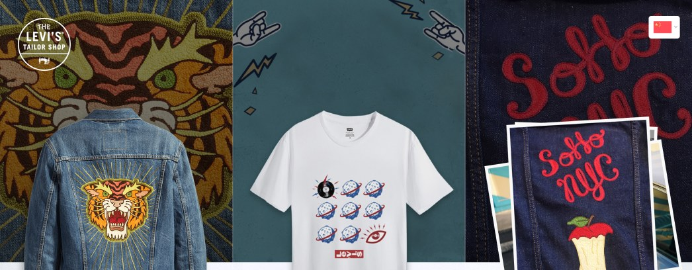

Case study · Retail tools
Tailor’s tools
for Levi’s
flagship stores.
A one-hour conversation with a working tailor surfaced the daily workflow of the tailoring team and shaped a tool I designed that now lives in seven flagship stores worldwide.
About this work: I led this in a director role at a previous agency. The problem, the decisions and the outcomes are described as they happened.

The approach
Research. Sketch. Test. Ship.
An in-store tool built around the tailoring team’s real workflow, launched in seven flagship stores, starting in Shanghai.
Research with practitioners
A focused one-hour session with a working tailor mapped the day-to-day rituals of the team and the moments where they meet the customer.
Sketchin Sessions
I turned research into concepts fast, using rough wireframes to explore early ideas and lock alignment across the wider team.
Tested in motion
I ran a movement study to validate the interactions in physical space, proving the tool worked the way tailors actually move on the floor.
The research
One hour with a real tailor shaped the entire product.
I started with a single, deep conversation. Not a survey, not a stakeholder workshop, not a persona built from assumptions: one working tailor, on the floor, talking me through the job.
That hour gave me a clear read on the daily practices of his team and the way they interact with customers in-store. It set the shape of everything that followed, and it meant I designed against real rituals instead of an imagined workflow.
- The day-to-day rituals of the tailoring team
- The moments where tailors meet the customer
- How the work actually moves around the floor
- Where the existing process created friction

From insight to idea
Sketchin Sessions™
I ran rapid-fire wireframe rounds that opened concepts up for exploration and got the team aligned before pixels got precious. Rough on purpose: cheap enough to throw away, clear enough to argue about.
By the time the direction sharpened, the wider team had already agreed on what the tool was for, and the debate had moved off aesthetics and onto behavior.
Motion design
Tested in motion, on the floor.
A tablet tool in a retail store isn’t used sitting down. It gets picked up, carried, set down, and returned to mid-task, while the tailor is measuring, fetching, and talking to a customer.
So I validated the interactions as movement rather than as screens. A movement study put the designed behaviors into physical space and checked them against how tailors actually move, proving the tool worked at the pace of the job.
- Interactions studied in physical space, not in a prototype viewer
- Transitions paced to the rhythm of the floor
- Motion used to hold a tailor’s place across interruptions
- Validated before the build committed to a pattern

The journey
From insights to launch, globally.
I started with a single, deep conversation. One hour with a tailor gave me a clear read on the daily practices of his team and the way they interact with customers in-store.
I moved from insight to idea through Sketchin Sessions: rapid-fire wireframe rounds that opened concepts up for exploration and got the team aligned before pixels got precious. As the direction sharpened, I ran a movement study to validate the interactions in physical space, then rolled the final app out across seven flagship stores worldwide, starting in Shanghai.
Outcomes
What it delivered.
Grounded in practitioner research
One hour with a working tailor shaped the entire product.
Sketchin Sessions for rapid alignment
Wireframe rounds that turned ideas into shared direction.
Movement study in physical space
Interactions validated the way tailors actually work.
Live in 7 flagship stores
Global roll-out, starting in Shanghai.